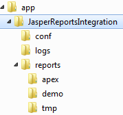
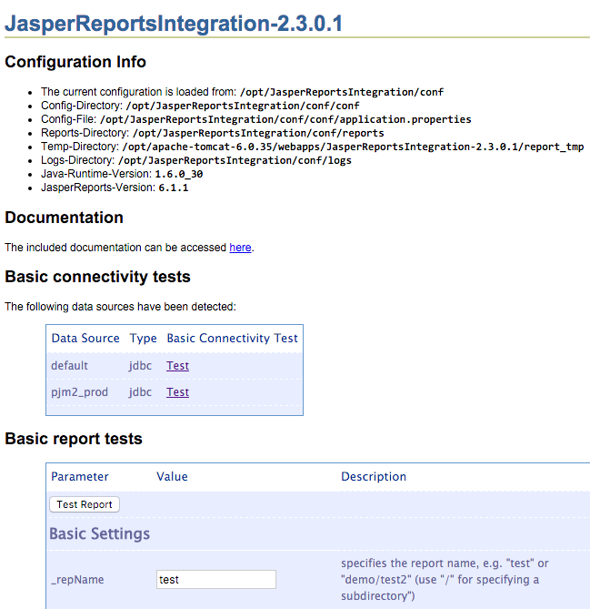
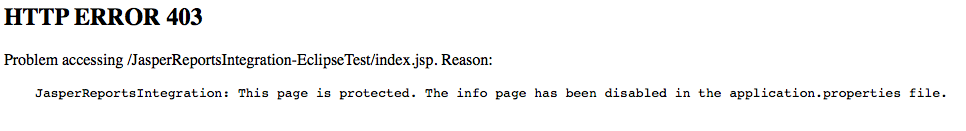

Installation
- Download the files
- Installation in the
J2EE server
- Installation of database objects
- Installation of
the test application
1. Download the files
You can download the files from here and unzip them.2. Installation in the J2EE server
We need to install the J2EE application and configure the data sources in this step. The J2EE application has to find various configuration files (e.g. conf/application.properties, conf/log4j.properties) and also the different reports that we can run (e.g. reports/test.jasper).It is recommended practice to separate the configuration-/report files from the J2EE application itself. In the early versions of the JasperReportsIntegration all reports were placed directly in the web application itself, for example into the directory $TOMCAT_HOME/webapps/reports. In order to easily upgrade your installation in the future it is recommended to put the configuration and report files into a separate directory and not store them inside of the J2EE application.
Nevertheless the J2EE application must be able to locate these files.
We have two options here:
- Configure the server environment using an operating system environment variable
- Configure the setting in the web.xml file of the JasperReportsIntegration.war file
If you want to use different configurations for your different instances on the same machine (either you deploy different version of the JasperReportsIntegration or you have your development, test and production environment running on the same machine but on different J2EE servers), you would use the direct manipulation of the web.xml file.
2.1. Configure the server environment using an operating system environment variable
Using the operating system environment variable OC_JASPER_CONFIG_HOME we can configure where these files reside on the filesystem. This directory is the same as the base directory of your downloaded files, i.e. it should at least contain the subdirectories conf, reports, logs.2.1.1 Create the required directory structure
First you need to set up the required directory structure in the target directory. Just copy the directories conf, reports and logs to the target directory, e.g. c:\app\JasperReportsIntegration:
2.1.2.a) Unix / Linux: set the environment variable
On a Unix / Linux system running Tomcat you could for example add this
setting to the Tomcat startup script (e.g. /usr/local/tomcat/bin/startup.sh): - OC_JASPER_CONFIG_HOME=/opt/JasperReportsIntegration
- export OC_JASPER_CONFIG_HOME
2.1.2.b) Windows: set the environment variable
On a Windows machine you could do the same (e.g. c:\program files\apache tomcat\bin\startup.cmd):- SET OC_JASPER_CONFIG_HOME=c:\app\JasperReportsIntegration
2.2 Configure the setting in the web.xml file of the JasperReportsIntegration.war file
By using this approach you can tell the JasperReportsIntegration.war file directly where it can find its configuration files. The following procedure will manipulate the J2EE context-parameter oc.jasper.config.home in the file web.xml of the JasperReportsIntegration.war directly for you.2.2.1 Create the required directory structure
First you need to set up the required directory structure in the target directory. Just copy the directories conf, reports and logs to the target directory, e.g. c:\app\JasperReportsIntegration:2.2.2.a) Unix / Linux: Set the configuration directory directly in the JasperReportsIntegration.war file
In the following example we will use /opt/JasperReportsIntegration as the target directory.- cd bin
- ./setConfigDir.sh
../webapp/JasperReportsIntegration.war /opt/JasperReportsIntegration
2.2.2.b) Windows: Set the configuration directory directly in the JasperReportsIntegration.war file
In the following example we will use c:\app\JasperReportsIntegration as the target directory.- cd bin
- setConfigDir.cmd
..\webapp\JasperReportsIntegration.war c:\app\JasperReportsIntegration
2.2.3.a) Unix / Linux: Get the configuration directory from the JasperReportsIntegration.war file
In order to determine the configuration directory from a specific JasperReportsIntegration.war file, you can run the following command to see where it points to. This is just for verification purposes.
- cd bin
- ./getConfigDir.sh
../webapp/JasperReportsIntegration.war
2.2.3.b) Windows: Get the configuration directory from the JasperReportsIntegration.war file
In order to determine the configuration directory from a specific JasperReportsIntegration.war file, you can run the following command to see where it points to. This is just for verification purposes.
- cd bin
- getConfigDir.cmd
..\webapp\JasperReportsIntegration.war
2.3 Configure your database access
Edit the file conf/application.properties in your target directory and configure the data source default to connect to your Oracle schema (change the parts in bold to point to the Oracle schema you want to connect to):# JDBC datasource configuration
# http://www.orafaq.com/wiki/JDBC#Thin_driver
# type=jdbc|jndi
#====================================================================
[datasource:default]
type=jdbc
name=default
url=jdbc:oracle:thin:@192.168.2.114:1521:XE
username=HR
password=hr_password
Alternatively you could use the native JNDI data source of your application server. See the documentation there on how to configure it. In this configuration file you would have to register just the JNDI datasource you want to use:
# Native JNDI datasource, to be configured in the application server
# name: jndi_test
#====================================================================
[datasource:jndi_test]
type=jndi
name=jndi_test
2.4 Encrypting all passwords in the application.properties file
You can optionally encrypt the passwords in the application.properties
file. Just follow the following steps, the file will automatically be
updated with the encrypted passwords for all of the datasources.2.4.1.a) Unix / Linux
In order to determine the configuration directory from a specific JasperReportsIntegration.war file, you can run the following command to see where it points to. This is just for verification purposes.
- cd bin
- ./encryptPasswords.sh <path to
application.properties file>
e.g.: ./encryptPasswords.sh /opt/JasperReportsIntegration/conf/application.properties
2.4.1.b) Windows
In order to determine the configuration directory from a specific JasperReportsIntegration.war file, you can run the following command to see where it points to. This is just for verification purposes.
- cd bin
- encryptPasswords.cmd <path to
application.properties file>
e.g.: encryptPasswords.cmd c:\app\JasperReportsIntegration\conf\application.properties
2.5 Deploy the J2EE application
Take the application server of your choice and deploy the file webapp/JasperReportsIntegration.war to
it. For an Apache Tomcat this typically means to copy the file
JasperReportsIntegration.war into the directory webapps of your Tomcat
application. If the Tomcat doesn't deploy it automatically, you would
have to restart the Tomcat. After that you can reach the JasperReportsIntegration homepage with the URL http://<server>:<port>/JasperReportsIntegration.
Here you will find the included documentation, information about the location of the configuration files, you can test the database connections and run the test reports:

2.6 Securing the homepage of the J2EE application
Since the homepage tells you a lot about the system you will typically
protect that information in a production environment. Therefore you can edit the file conf/application.properties and set the config parameter infoPageIsEnabled=false.
# Application properties (global)
#====================================================================
[application]
configFileVersion=2.3.0
jndiPrefix=java:comp/env/jdbc/
# infoPageIsEnabled will show the initial start page of the j2ee application
# including testing and the environment settings
infoPageIsEnabled=false
After you restart the J2EE application the homepage will be protected:

3. Installation of
database objects
The database objects required for the integration will be installed
into each application schema that you want to use with the
integration.
The installation instructions will refer to the application schema (in which you install the software) as [application schema]. The password for the application schema will be referred to as [application schema password].
Thus when I use an instruction like sqlplus [application schema]/[application schema password]@[database] please replace that with the actual values of your local installation. For example, if you want to install the integration kit into the schema HR with the password hr1 into your local XE instance (having a TNS entry named xe) then this instruction translates to:
sqlplus hr/hr1@xe
3.1 Database installation (SYS)
First of all we need to grant the required privileges to the Oracle user who will own the packages for the integration.
- Extract the downloaded zip file.
- Open a command shell:
- e.g. on Windows: Start > Execute : cmd
- Go to the subdirectory sql (of where you extracted the file):
- cd sql
- Connect as SYS to the local instance (using sqlplus)
- sqlplus "sys/[sys password]@[database] as sysdba"
- Run the installation script (and pass the name of the target
application schema as a parameter)
- @sys_install.sql [application schema]
- [optional] If you are installing on an Oracle Release 11.0 and
higher, you have to grant the required network privileges to the
application schema.
- The script
sys_install_acl.sql allows access to the local machine on port 80 to
port 10000. Please adapt the script to suit your needs, especially if
the J2EE server is running on a different machine. It needs to be run for each application
schema using the integration.
- @sys_install_acl.sql [application schema]
- The script
sys_install_acl.sql allows access to the local machine on port 80 to
port 10000. Please adapt the script to suit your needs, especially if
the J2EE server is running on a different machine. It needs to be run for each application
schema using the integration.
3.2 Database installation (Application Schema)
- Open a command shell:
- e.g. on Windows: Start > Execute : cmd
- Go to the subdirectory sql (of where you extracted the file):
- cd sql
- Connect as the application schema to the local instance (using
sqlplus)
- sqlplus [application schema]/[application schema password]@[database]
- Run the installation script
- @user_install.sql
4. Installation of the test application
The test application will allow for basic testing of the integration
with all relevant parts. Install the application file apex\f121_JasperReportsIntegration-Test_x.x.x.x.sql
into your workspace.
It will perform checks on the installation and allow you to run the
test reports.

In some circumstances you can encounter errors, mostly due to
enhanced security constraints:

- Check 4 can fail when there is no valid index page for the J2EE container
- Check 5 and Check 6 can fail, when the setting infoPageIsEnabled=false in the application.properties file is set